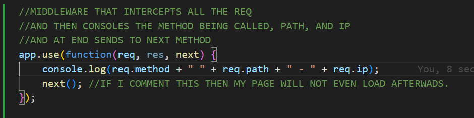

Middleware function,
middleware fucntions can take 3 arguments i.e request object, applicants request-response cycle. These basically add information to request or response objects. If they dont send the response when they are done, then they start the execution of next function in the stack.this triggers teh 3rd argument next()
Example
function(req, res, next) { console.log("I'm a middleware..."); next(); }
Express executes the methods sequentially, so in order to execute middleware first it should be mounted on top.
Example of a middleware from exercise.
